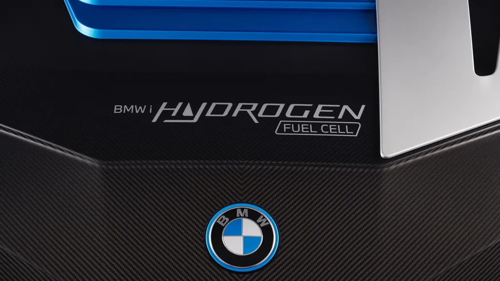

BMW traz seu carro elétrico mais potente para o Brasil
A BMW anunciou que o BMW iX M60 está confirmado para o Brasil. O SUV é o modelo elétrico mais potente e veloz da montadora alemã e chega para ser a versão topo de linha desse que é um dos automóveis mais avançados e tecnológicos à venda no país.
Segundo a BMW, o iX M60 segue com dois motores elétricos, só que esses propulsores agora rendem 619cv e 103,5 kgf/m de torque, proporcionando uma aceleração de 0 a 100 km/h em apenas 3,8s, o mesmo tempo registrado pelo BMW X6 M Competition
Para efeito de comparação, o iX M60 tem 96cv e 25,4 kgf/m de torque a mais do que a variante xDrive50. A velocidade máxima da nova versão, aliás, chega a 250km/h, limitada eletronicamente para a preservação das baterias.
Para abastecer tudo isso, a BMW selecionou uma bateria de 111,5kWh. Com isso, o iX M60 consegue ter autonomia estimada em 561km no ciclo WLTP, o mesmo utilizado na Europa. Os dados considerando a medição do Inmetro ainda serão revelados pela empresa.
Para diferenciar o iX M60 dos demais modelos da linha, a BMW utilizou alguns recursos visuais, como um novo desenho para as rodas de 22 polegadas e as pinças de freio pintadas na cor "dark blue".
A principal novidade do BMW iX M60 foi o novo conjunto de motores. Em termos de equipamentos e tecnologia, o SUV segue como um dos mais equipados e inteligentes do mercado. Além de todos os sistemas de auxílio à condução, que o tornam praticamente um veículo semiautônomo, a BMW manteve uma vasta lista de recursos bem interessantes.No iX M60, há o GPS com realidade aumentada, a frenagem regenerativa que considera o trajeto do GPS, sistema de som de alto padrão assinado pela Bowers & Wilkins com 30 alto-falantes, janelas que escurecem automaticamente (como no Boeing 787 Dreamliner), trilha sonora ambiente composta pelo renomado músico Hans Zimmer, sistema de estacionamento 100% automático, chave digital instalada no celular, entre outros.
BMW promete lançar carro a hidrogênio "acessível" até 2030
A BMW não estava brincando quando disse que aposta que o carro a hidrogênio tem tudo para ser mais popular que o elétrico no futuro. Prova disso foi a entrevista que o presidente do grupo, Oliver Zipse, deu para o pessoal do Top Gear durante o lançamento do Rolls-Royce Spectre.
O executivo prometeu não apenas colocar no mercado um carro movido a hidrogênio “ainda nesta década”, mas acrescentou que este primeiro lançamento da marca alemã será “viável”, ou seja, não será apenas para um público-alvo seleto. “Nesta década haverá um produto viável da BMW com hidrogênio. Você vai ver isso”, pontuou.

Na visão do presidente do BMW Group, o que deve definir o sucesso maior do carro a hidrogênio no comparativo com os eletrificados é a facilidade para a implementação da infraestrutura necessária para o recarregamento. Hoje este é um dos pontos que ainda impedem um maior crescimento em vendas dos carros elétricos em algumas regiões do planeta.“Em algumas áreas, implementar uma infraestrutura de hidrogênio é mais fácil do que uma infraestrutura elétrica, por exemplo, em áreas onde você não tem nenhuma conexão com a rede elétrica. Para o hidrogênio, você só precisa do tanque. Haverá casos neste mundo em que você terá essa situação”, ponderou.
BMW será 1ª montadora do mundo a usar plataforma em nuvem da Amazon
O BMW Group está com o foco voltado para a inovação. Pouco depois de anunciar um acordo que levará jogos de vídeogame para a tela da central multimídia, uma nova parceria foi firmada de olho no futuro do segmento automotivo, desta vez com o Amazon Web Services (AWS).
A colaboração estratégica fará com que a montadora alemã se torne a 1ª do mundo a utilizar o software do AWS para gerenciar dados de seus veículos conectados. A ideia é que ele seja integrado à plataforma “Neue Klasse” na futura linha de carros elétricos e, então, aumente a velocidade e o volume de processamento.“Já temos cerca de 20 milhões de veículos amplamente conectados na estrada hoje. Quando o 'Neue Klasse' for lançado, nossa plataforma de nuvem offboard, desenvolvida pelo AWS, processará aproximadamente o triplo do volume de dados do veículo em comparação com a geração atual de modelos BMW.Junto com o AWS, continuaremos a criar soluções inovadoras, permitindo-nos desenvolver novas funções orientadas por dados e disponibilizá-las aos clientes mais rapidamente", comentou Nicolai Krämer, vice-presidente de Plataformas de Conectividade de Veículos da BMW.
A BMW afirmou que segurança é a prioridade número 1 e que a utilização do sistema em nuvem do AWS é imune a hackers ou outras modalidades de crimes cibernéticos. A empresa afirmou ainda que a Amazon Web Services ficará responsável pelo fornecimento de infraestrutura e serviços em nuvem, mas que "sem acesso ou insights sobre dados gerados pela frota de veículos conectados do BMW Group".Apenas os especialistas de domínio interno da montadora, incluindo desenvolvedores de apps de veículos, gerentes de frota, cientistas de dados e inteligência artificial, inteligência de negócios e engenheiros de desenvolvimento terão acesso aos dados.O acesso acontecerá por meio de um mecanismo de autoatendimento. "Ele reúne dados de veículos de streaming, adiciona facilmente novos dados, configura o acesso de acordo com as políticas de governança e monitora a qualidade e a integridade das fontes", assegurou a marca.
BMW e Microsoft firmam parceria para criar sistema de fabricação inteligente
A BMW tem grandes planos para seu próximo veículo elétrico e totalmente autônomo, o iNext, que foi apresentado no ano passado. Contruir e programá-lo, porém, exigirá um sistema de fabricação simplificado, coordenado e automatizado — algo que a Microsoft está fortemente envolvida.
As duas gigantes anunciaram uma parceria para lançar uma nova plataforma de produção industrial open source chamada Open Manufacturing Platform, ou OMP. Ela é baseada no Azure, da Microsoft, que a BMW já utiliza para executar suas mais de 3.000 máquinas em 30 locais de produção e montagem em todo o mundo. Os valores investidos, no entanto, ainda são um mistério.
A OMP foi concebida para criar sistemas autônomos de uma forma simplificada e mais eficiente em termos de custos, podendo eventualmente ajudar com outras coisas, como a gestão da cadeia de fornecimento digital e a manutenção preventiva. Para obter máquinas conectadas e automatizadas, o código de amostra de um produto estará disponível na plataforma de referência de código aberto. Com tudo disponível, equipes diferentes e eventualmente outras empresas poderão aproveitar os sistemas comprovados.